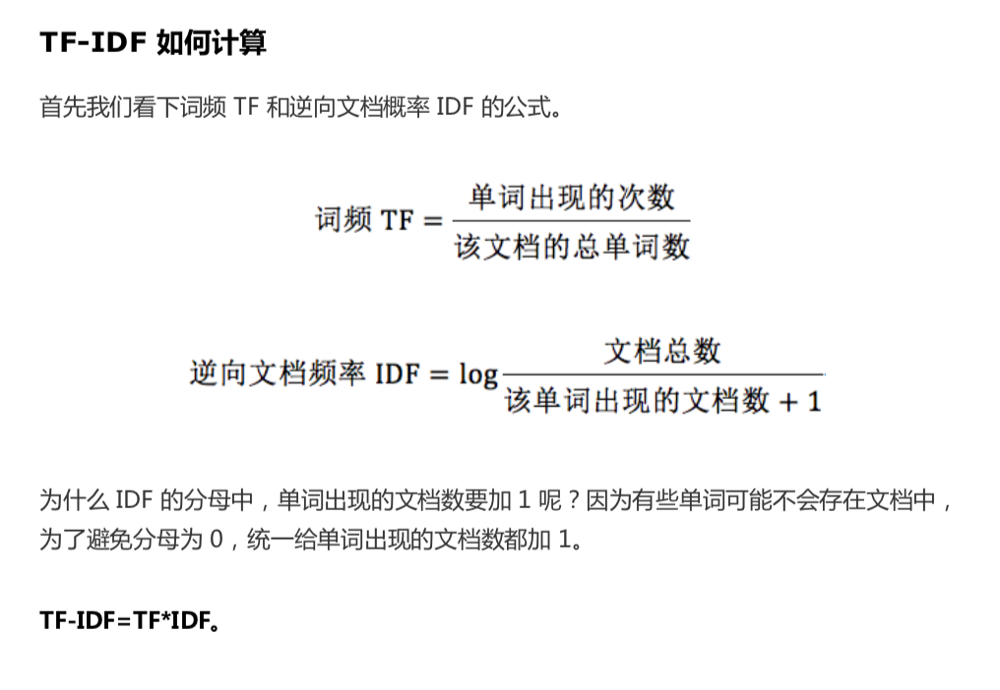
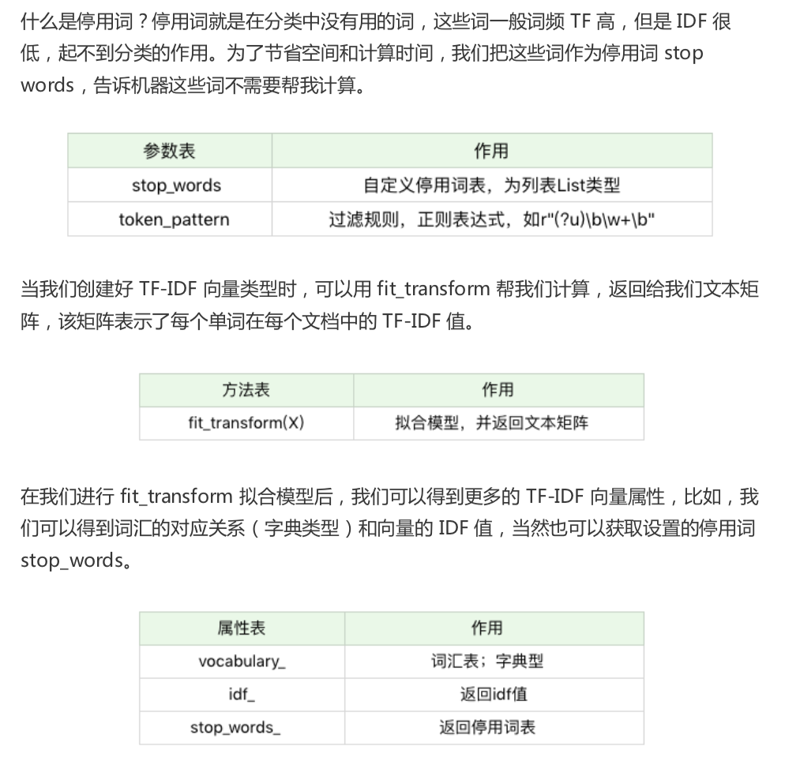
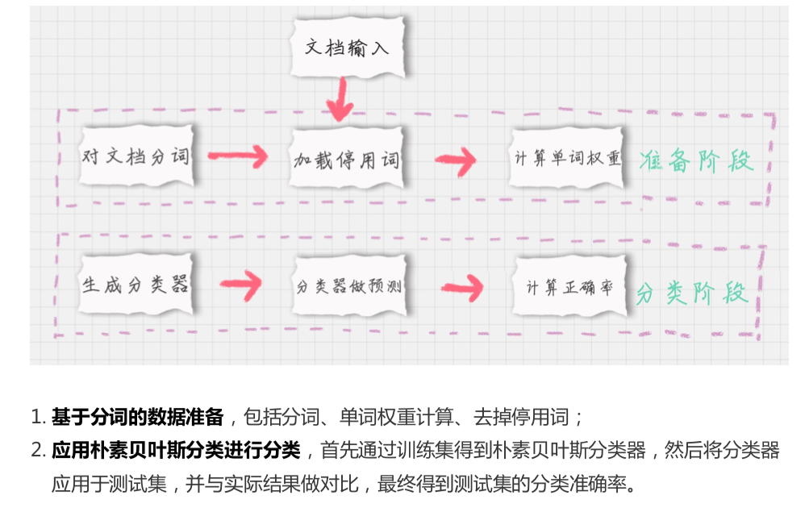

21-朴素贝叶斯分类（下）：如何对文档进行分类？
sklearn 机器学习包
sklearn 全称叫 Scikit-learn ， 它给我们提供了3个朴素贝叶斯分类算法
- 高斯朴素贝叶斯： 特征变量是连续变量，复合高斯分布，比如人的身高，物体的长度
- 多项式朴素贝叶斯：特征变量是离散变量，复合多项式分布，在稳定分类中特征变量体现在一个单词出现的次数，或者是单词的TF-IDF 值等
- 伯努利朴素贝叶斯：特征变量是布尔变量，复合 0/1 分布，在文档中特征是单词是否出现
什么是 TF-IDF 值
TF-IDF 是一个统计方法，用来评估某个词对于一个文件集或文档库中的一份文件重要程度。
TF-IDF 实际上是两个词组 Term Frequency 和 Inverse Document Frequency 的总称，分别代表了词频和逆向文档频率。
词频TF 计算一个单词在文档中的次数
逆向文档频率IDF，是指一个单词在文档中的区分度。
所以 TF-IDF 实际上是词频 TF 和逆向文档频率IDF的乘积

如何求 TF-IDF
Sklearn 中我们直接使用 TfidVectorizer的类，它可以帮我们计算单词 TF-IDF 向量的值。 在这个计算的对数log 是， 底数是e， 不是 10
TfidfVectorizer类的创建
TfidfVectorizer(stop_words=stop_words, token_pattern=token_pattern)
参数 stop_words 停用词，token_pattern 规律规则

from sklearn.feature_extraction.text import TfidfVectorizer
# 创建模型
tfidf_vec = TfidfVectorizer()
# 假设文档
documents = [
'this is the bayes document',
'this is the second second document',
'and the third one',
'is this the document'
]
# TF-IDF 矩阵
tfidf_matrix = tfidf_vec.fit_transform(documents)
print('不重复的词:', tfidf_vec.get_feature_names())
print('每个单词的ID:', tfidf_vec.vocabulary_)
print('每个单词的efidf值:', tfidf_matrix.toarray())
如何对文档进行分类

模块1: 对文档进行分词
在准备阶段了，最重要的就是分词。
英文 NTLK 包，中文 jieba
import jieba
# 1. 对文档进行分词
word_list = jieba.cut(text) # 分词
print(word_list)
# 2. 加载停用词表
stop_words = [line.strip() for line in open('datasets/jieba/stop_words.txt' , encoding="utf-8").readlines()]
# 3. 计算权重
tf = TfidfVectorizer(stop_words=stop_words, max_df=0.5)
features = tf.fit_transform(train_contents)
# 4.多项式贝叶斯分类器
from sklearn.naive_bayes import MultinomialNB
clf = MultinomialNB(alpha=0.01).fill(train_features, train_labels)
# 5. 使用生成的分类器作预测
test_tf = TfidfVectorizer(stop_words=stop_words, max_df = 0.5,
vocabulary=train_vocabulary)
test_features = test_tf.fit_transform(test_contents)
# 预测
predicted_labels = clf.predict(test_features)
# 6 计算准确率
from sklearn import metrics
print(metrics.accuracy_score(test_labels, predict_labels))